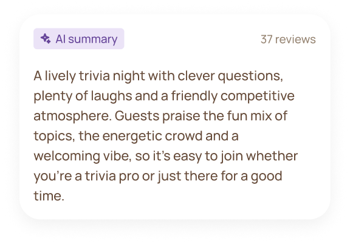
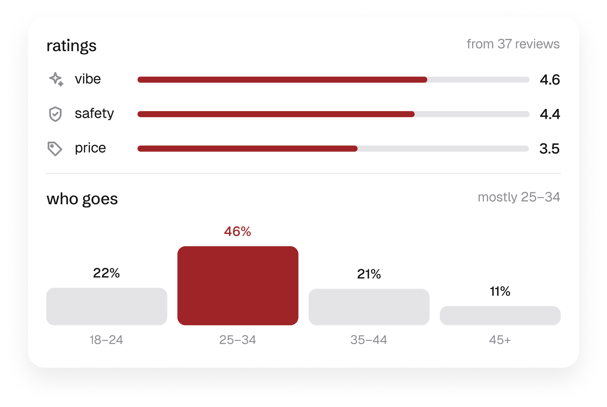
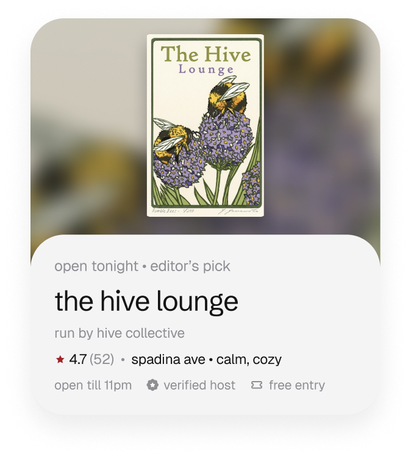
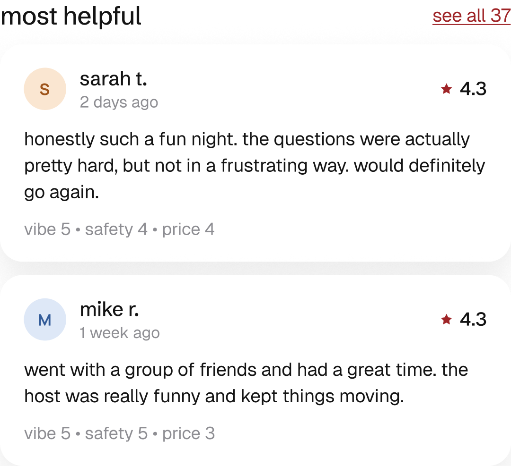
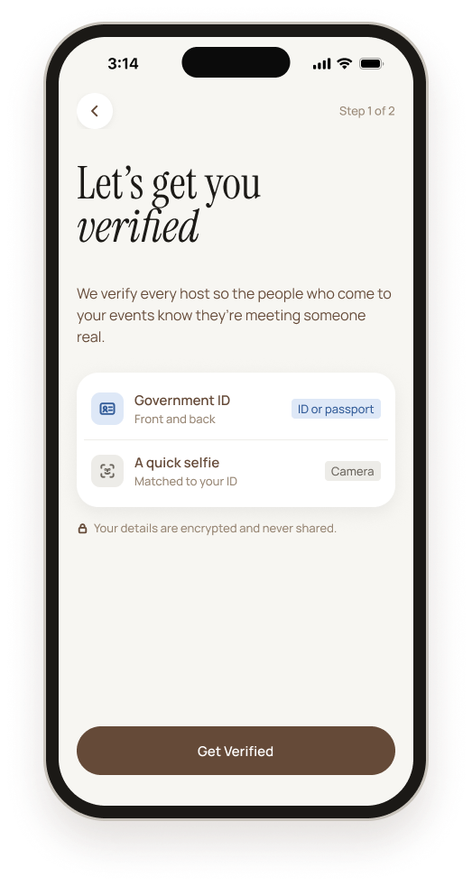
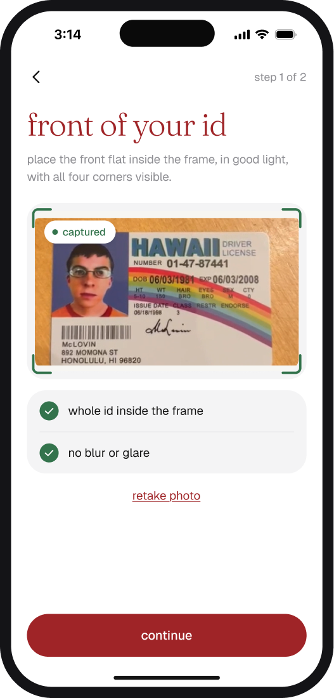
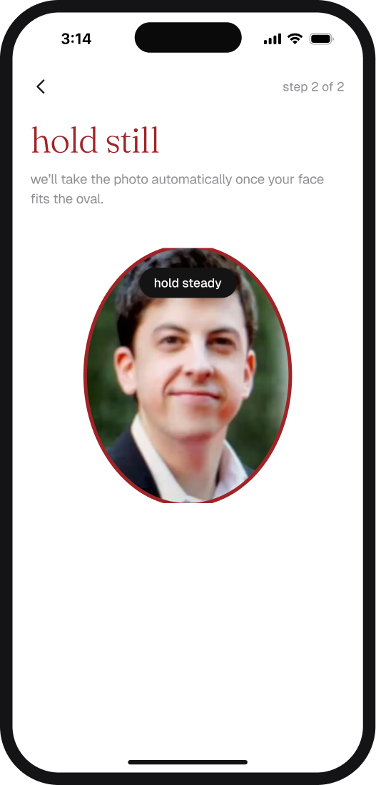
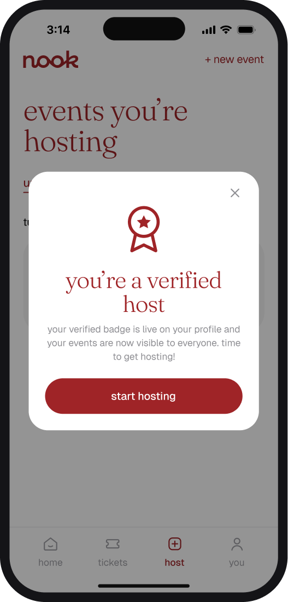
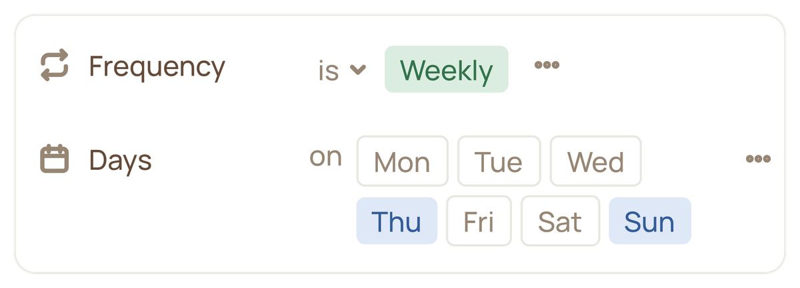
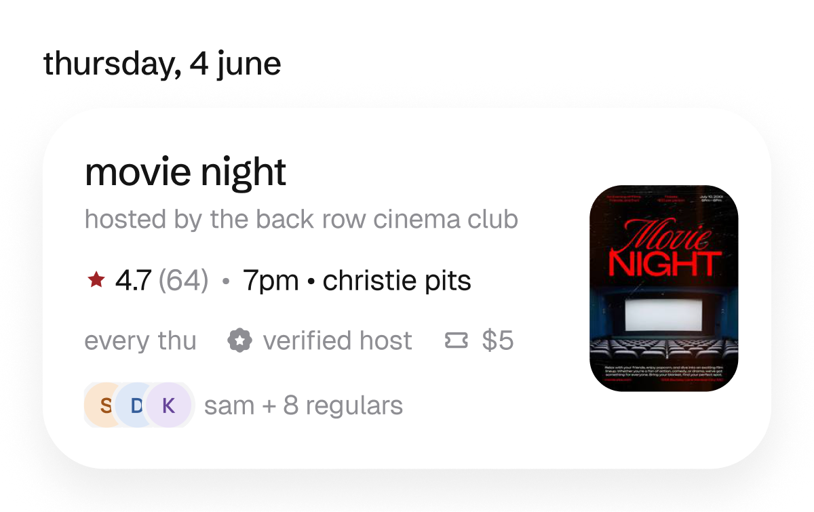

Nook
Overview
A mobile app helping young adults discover affordable, recurring third spaces in Toronto where friendships can grow. I led the user research, testing, key user flows, and visual design.
Problem
Toronto is experiencing an ongoing loneliness epidemic in a city of 3.3 million.
37% of Torontonians feel lonely three or four days a week.
Nearly four in ten Torontonians, about 925,000 people, said they felt lonely on at least three or four days in the past week. That’s the highest of any major Canadian city surveyed.
Source: Toronto Foundation, Toronto’s Vital Signs Report 2023
204 people asked Reddit how to make friends in Toronto.
I scraped Reddit from September 2025 to September 2026 and found 204 posts of people asking how to make friends in Toronto. In a city of 3.3 million, people stills struggle to seek out human connection.
The Problem Statement
How might we help young adults in Toronto find affordable, recurring places to meet people, so friendships have a chance to grow?
Key Solutions
01 Discover Activities & Social Spots
With third spaces dwindling, it’s harder than ever to find places that foster organic social interaction, and competitor discovery apps focus on events in the city rather than social spaces. So Nook lets users toggle between events and social spots, depending on what they’re looking for.
02 Verified Hosts & Detailed Reviews for a Safer Experience
45.7% of Gen Z we surveyed find listings on discovery apps spammy or untrustworthy, and female interviewees named safety as a top concern. So every host is ID-verified, and every event shows real guest reviews, summarized by AI and rated on vibe, safety and price.

Get the vibe in seconds
An AI summary of every review, so you know what to expect.

See what matters at a glance
Vibe, safety and price, rated by real guests, plus who usually goes.

Know your host is verified
Look for the verified badge on every event and spot.

Hear it from real guests
Honest comments, each with the guest’s own vibe, safety and price ratings.




Two-step verification to host
ID + face scan, so every host is who they say they are.
03 Filter for Recurring Events
Friendships don’t form at a single event. They grow from seeing the same faces week after week. So users can filter for recurring events on the days that suit them and see who the regulars are, making it easy to keep showing up until familiar faces become long-lasting friends.

Filter for what repeats
Pick weekly, bi-weekly or monthly events on the days you’re free, so showing up becomes a habit.

Turn regulars into friends
Keep going, keep seeing the same faces, and let friendships build over time.
User Research
Understanding how younger people find social spots
To better understand the problem, I analyzed competing apps, surveyed 35 young adults, interviewed 5 people from my target audience, and conducted secondary research on friendship.
My goal was to understand how young adults find places to socialize, what gets in the way, and what they’re looking for instead.
Secondary Research
Competitor Analysis
Survey
Discovery is scattered.
77% rely on Instagram to find events, yet half find juggling apps frustrating and 48% still hear about them too late.

Young adults have low trust.
66% find event platforms spammy or dubious, yet 71% want a regular group to belong to.

Cost and vibe decide.
97% weigh cost first, and 83% need to know the vibe before they commit.

Interviews
Names changed for privacy.
“I’d say social media is how I typically find most of the events… I’d spend about 15, 20 minutes just looking up things that are around me, or things that could be happening around me within the next week.”
— Jordan · Business owner
Asked how she’d go about making new friends“I would try to go somewhere frequently, like a cafe. At the same time, I’m more on the introverted side, so I wouldn’t know how to start a conversation with someone. I guess I know how to, but I wouldn’t naturally go up to someone.”
— Leah · Student
“If it was an organization holding this event, I would look for the organization’s website and information about them… [to see if] it would be reputable and safe.”
— Leah · Student
TLDR
- Friendship takes repetition. A close friend takes about 200 hours, but apps sell one-off events, and 71% want a regular group.
- Discovery is scattered. 77% find events on Instagram, and searching takes 15 to 20 minutes of scrolling.
- Trust is low. 66% find event platforms spammy, so people vet hosts themselves before they feel safe.
- Vibe and cost decide. 97% weigh cost and 83% need to know the vibe, but no competitor shows it.
Lo Fi Sketches

Mid Fidelity User Testing
Visual Design
Final Product
Reflections